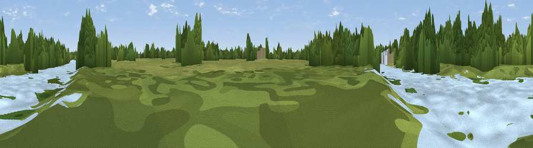

Viewpoint near Isleworth
#46216 in England · top 96% of its area beats it · near IsleworthThe view, rendered

A 360° render of this exact spot computed from the terrain model, tree cover and land cover — summer colours, afternoon light, calibrated against photographs of famous viewpoints. Real trees, hedges and buildings will differ in detail.
The panorama
Grey silhouette: terrain skyline in each direction (720 bearings, Earth curvature and refraction included). Dashed green: skyline with trees (+15 m) and buildings (+8 m) as obstacles. Blue strip: how far the ground is visible on each bearing.
Where the view opens
Wedge length = distance to the farthest visible ground on that bearing (vegetation-aware). Rings at 10, 25 and 50 km.
What fills the view
71% woodland · 13% water · 9% grassland · 6% built-up
Angular shares of the visible panorama (visual magnitude), not map area. Landscape diversity 0.39 (0–1 Shannon).
Key numbers
More beautiful places nearby
The staircase of upgrades: each row has a higher view potential than everything closer. Driving times are estimates from straight-line distance, calibrated against real road routing — check an actual route before setting out.
| Place | Direction | Drive | Score |
|---|---|---|---|
| Viewpoint near Richmond | ENE · 1 km | ~4 min | 17.1 |
| Viewpoint near Brentford | NE · 2 km | ~5 min | 20.0 |
| Viewpoint near Richmond | SSE · 2 km | ~6 min | 42.3 |
| Viewpoint near Richmond | SSE · 3 km | ~8 min | 43.7 |
| Horsenden Hill | N · 8 km | ~17 min | 45.0 |
| Viewpoint near Northolt | NNW · 9 km | ~17 min | 47.3 |
| Viewpoint near Hayes End | NW · 10 km | ~19 min | 48.1 |
| Harrow on the Hill | N · 12 km | ~22 min | 60.7 |
51.47166, -0.31475 · source: osm viewpoint · position refined by local search. Computed location — check access rights before visiting.